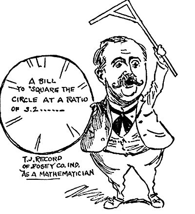
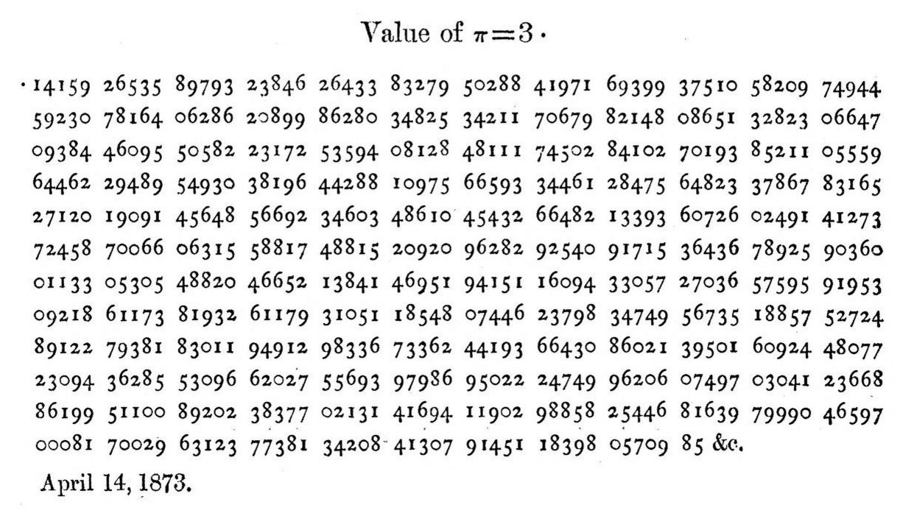
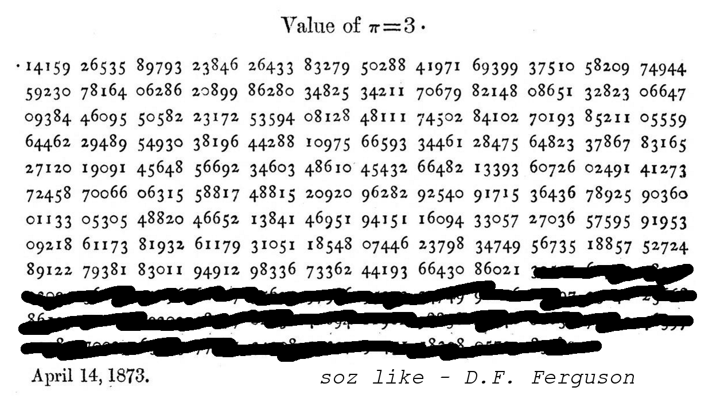

It's complicated
It's complicated
It's complicated
What do we know about π?
- It has to do with circles - something something 2πr
- It tastes delicious
- It's infinite
- It goes on forever
- It has infinitely many decimal digits
- It's random
- There's no pattern to its digits
- It's irrational
- It's transcendental
How to calculate π
Measure a circle
Measure a pendulum's swing
\[ \pi = \frac{T}{2} \sqrt{\frac{L}{g}} \]
Embrace the noise
\[ x^2 + y^2 \leq 1 \]
Draw a polygon which looks like a circle
\[ P_{2n} = \frac{2p_nP_n}{p_n+P_n}, \\[1.5em] p_{2n} = \sqrt{p_nP_{2n}} \]
Give up and legislate it
"the ratio of the diameter and circumference is as five-fourths to four."
Machin's formula
\[ \frac{\pi}{4} = 4 \arctan \left(\frac{1}{5}\right) - \arctan \left(\frac{1}{239}\right) \]
Rewrite as an infinite series
\[ \pi = 4 \sum_{n=0}^{\infty} \frac{(-1)^n)}{2n+1} \left( 4 \left(\frac{1}{5}\right)^{2n+1} - \left(\frac{1}{239}\right)^{2n+1} \right) \]
William Shanks, Local Hero
William Shanks spent over 20 years calculating π to 707 decimal places.
But he made an error at the 528th digit.
William Shanks, Local Hero
William Shanks spent over 20 years calculating π to 707 decimal places.
But he made an error at the 528th digit.
William Shanks, Local Hero
William Shanks spent over 20 years calculating π to 707 decimal places.
But he made an error at the 528th digit.
Use a machine
D.F. Ferguson spotted Shanks's error and broke his record with a mechanical desk calculator.
Since then, computers have gone on to compute a stupid number of decimal places of π.
{kind=link}
Spigot algorithms
(A bit like this bear, but for digits of π)
Spigot algorithms
Iterative algorithms which produce digits one at a time, and never reuse a digit in a later step.
And they only use a constant amount of working memory.

So I bought
The Bailey-Borwein-Plouffe formula
\[ \pi = \sum_{k=0}^{\infty} \frac{1}{16^k}\left( \frac{4}{8k+1} - \frac{2}{8k+4} - \frac{1}{8k+5} - \frac{1}{8k+6} \right) \]
You can extract any digit of π without working out any of the previous ones.